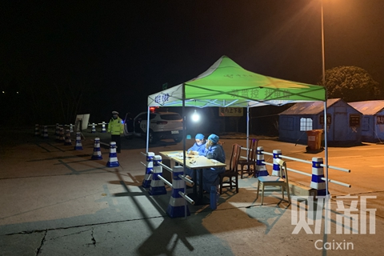
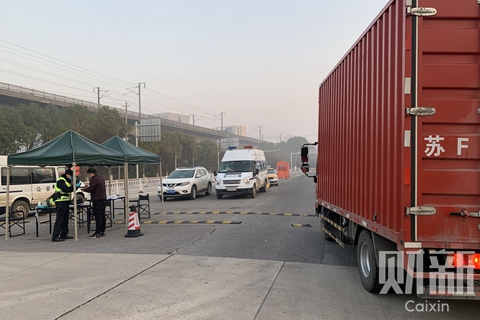

物资告急那几天，四位女生在城里「补缺」丨武汉人⑤
原文链接 备份链接 关注并星标消费新声 不错过泛消费任何最新动态 _ _ _ 灾情尤其是规模性的疾病惯于与大城市如影随形，而“城市会因为一些人的腐败而蒙羞”，但对于这些生活于斯的武汉人来说，「不管政府做了什么，人们对自己出生或者成长的地方 …
【财新网】（记者 包志明）2月3日下午16时，31岁的货车司机王辉在上海浦东机场附近的货仓装满物资，就和弟弟的车一前一后驶上了开往武汉的救援之路。
因为新冠肺炎疫情的发展，武汉已经“封城”11天，900万武汉居民的生活物资和9万医护人员的医疗物资，需要靠这些厢式货车一车一车运进武汉。这也让王辉兄弟的这段800多公里车程有了与以往不一样的意义。
这次，王辉兄弟运送的是由东南大学德国校友会、复旦大学附属肿瘤医院、复旦大学附属耳鼻喉科医院等单位捐赠的医疗物资。王辉车里装的主要是口罩、手术手套、护目镜、输液泵和注射泵等小件物资，目的地武汉同济医院；他弟弟主要载运呼吸机、氧气瓶等大件物资，送往即将完工的雷神山医院。
从1月27日，也就是大年初三开始，王辉兄弟俩个就开始运送捐赠物资了，六七天里跑了四趟，共7000多公里。

上海通往武汉的各高速路服务区入口，都设置了测温点。图/财新记者 包志明
“我年初一刚吃完团圆饭，就看到货车司机群里在喊有捐赠的医疗物资要急送武汉，当时还没有人接单。我想这可怎么办，武汉那么多医生病人都在等着，就马上和我弟弟商议后，赶紧安顿好家人出车了。”王辉说。
最大的阻力来自于家人。王辉的小儿子刚满月，妻子死活不愿意他去跑这单。“我老婆怕我感染，当时我们安徽农村已经要封村了，气氛非常紧张。我老婆说，儿子刚满月你就拉这种活，你是不是不要我们娘俩了。我只好说，儿子以后要买奶粉和营养品，都要钱，这单活价格是平时的好几倍，而且高速不收费，赚的多。她才勉强同意。”
不过说到钱，王辉有点脸红。“运费是比平时高，而且很多货主加价，但我们就按平时价格收，也不会多要。刨去油费大概赚个700多块钱，就和平时跑杭州一样。”王辉说，“我觉得只要赚点生活费就行，他们（捐助者和医院）的钱可以用在更有用的地方。”
王辉的弟弟说自己没有那么高的觉悟，他坦承自己当初出来跑单就是为了赚钱。“当时看到运费高就出来跑了，想赚一笔，但是跑一趟后看到武汉那么多医生、志愿者都在那么奋不顾身的工作，送完货后，医生对我们千恩万谢，就真的开不了要钱的口了。”
出了第一趟车后，王辉兄弟俩就再也收不住了，以三天两趟的速度跑了四趟车，全部是上海运往武汉的捐赠物资，几乎连轴转。但因为各地的疫情防控政策，运送物资的王辉兄弟，自己的物资成为了问题。

大多数高速路服务区已经不提供餐饮和商品销售服务。图/财新记者 包志明
“武汉的餐馆都关门了，沿途高速公路服务区的餐馆也没有一家开的，连便利店都少有开着的，只能天天吃泡面，没有一顿米饭。”王辉苦笑的说，“这次在上海路边终于看见一家开着的饭店，是兰州拉面，很高兴。但进去一问，老板说，只有面条，所以最终还是没能吃上米饭。”
财新记者跟车在沿途发现，经过的四个高速公路服务区，餐馆和便利店全都关门，整个服务区仅入口处有穿着防护服的测温人员和警察，以及一两个加油站工作人员。一位留守的工作人员向财新记者表示，他们是接上级防疫指示，不提供商品售卖服务，减少司机的停留时间。“都是上级的意思，有东西也不会卖，你去别的服务区看看吧。”一工作人员说道。
一趟800多公里的车程需要开15个小时，开四小时车要眯半个小时，为了赶时间，王辉兄弟俩的食宿几乎都在车里解决。“饿了就吃泡面，困了就开进服务区打个盹。有时出车赶，每天就吃一顿饭，睡三小时。”王辉说。
2月4日凌晨1点，王辉兄弟俩在沪渝高速大龙山服务区休息过夜。山区的气温已经降到零下，车内睡觉也无法打开暖气。王辉只能盖上一床被子趴在方向盘上睡觉，中间时常会被冻醒。凌晨4点左右，睡了3小时的兄弟俩继续赶路。

王辉抵达武汉凤凰山高速路出口，向入城关口的民警提交通行证和捐赠协议。图/财新记者 包志明
2月4日早上8点，两辆货车终于抵达了武汉凤凰山高速路出口，测完体温，给入城关口的民警查看了通行证和捐赠协议后，车辆得以放行入城，然后分别驶抵武汉同济医院和雷神山医院。
在同济医院，早已等在现场的医院后勤处工作人员和志愿者马上开始卸货，王辉也一起帮忙搬运。末了，他在医院门口和这些志愿者拍了合影。他左手比出了一个胜利的手势，货车停在身后，车上的横幅写着：上海-武汉接力捐赠物资。
“多少年以后，如果我的孩子听到武汉抗击疫情，还有雷神山、火神山这些事情，我就可以和他说，你爸爸曾经也是这里面的一员，他也一定会为我骄傲的。”王辉说。
此文限时免费阅读。感谢热心读者订阅财新通，支持新闻人一线探求真相！成为财新通会员，畅读财新网！
更多报道详见：【专题】武汉肺炎防疫全纪录（实时更新中）
原文链接 备份链接 关注并星标消费新声 不错过泛消费任何最新动态 _ _ _ 灾情尤其是规模性的疾病惯于与大城市如影随形，而“城市会因为一些人的腐败而蒙羞”，但对于这些生活于斯的武汉人来说，「不管政府做了什么，人们对自己出生或者成长的地方 …
原文链接 备份链接 2月1日，一家专业从事医药分销配送的企业，开始协助武汉红十字会处理仓库中堆积的援助物资。无序的状况有了很大改观。 1月23日武汉“封城”以来，医院防护物资告急，各种民间力量应声而动。 华中科大和武汉大学的美国北加 …
原文链接 备份链接 国内外的口罩都在送往武汉，可武汉医院的不仅缺口罩，甚至即将用完。人民日报在其官微发问：究竟是物资紧缺还是物资分配环节存在问题？ 截止到目前，协和医院收到的物资全部来自企业和个人捐赠。物资直接对接到各地疫情指挥部或是各 …
原文链接 备份链接 01.02.2020本文字数：3601，阅读时长大约6分钟 导读：关于一线医院防护物资紧缺的消息满天飞，湖北省红十字会、武汉红十字会物资分配效率和公平性问题引发质疑。 作者 | 第一财经 李澄晚 1月31日下午，涂先 …
原文链接 备份链接 海内外源源不断捐赠武汉，各大医院仍全面告急。被指定接收捐赠物资的主要机构湖北省与武汉市红十字会系统成为众矢之的，他们原本应该为重大突发事件做好准备，却一开始就因专业能力不足遭遇了信任危机。 本刊记者探访了武汉红十字会位 …